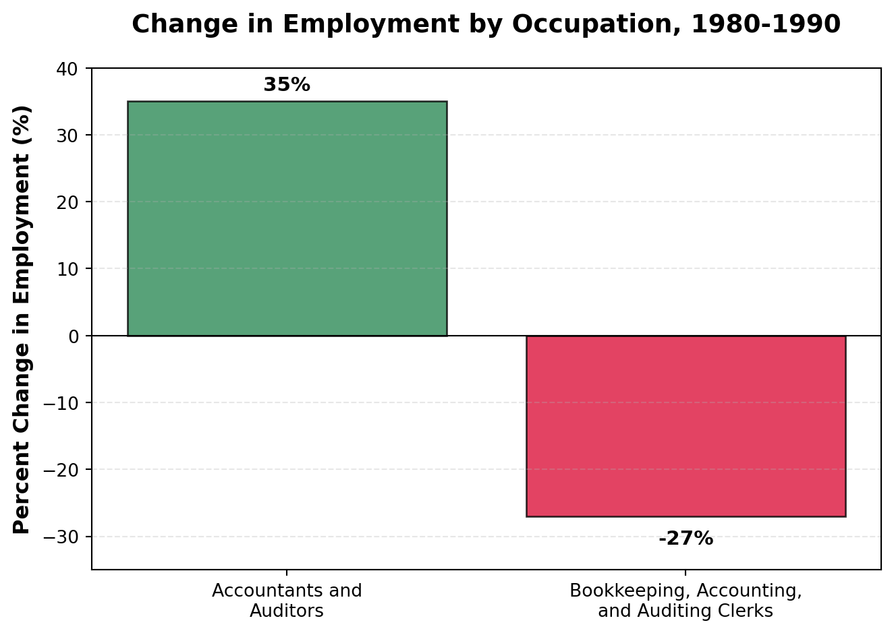
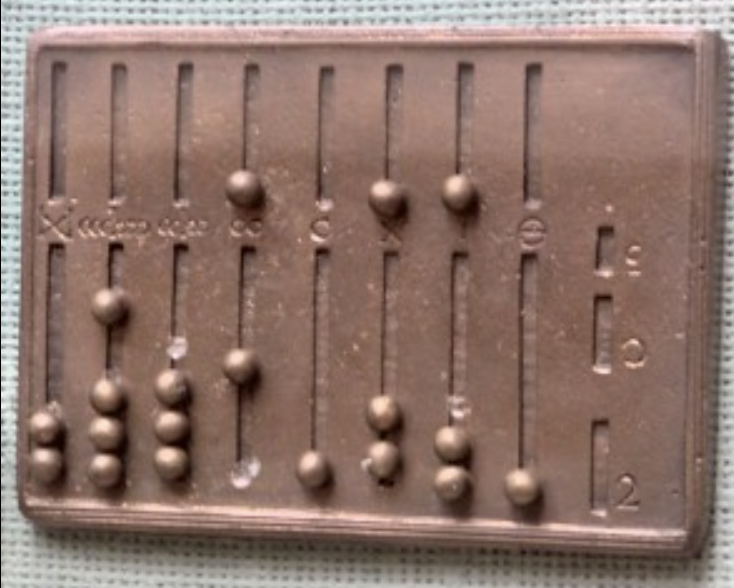
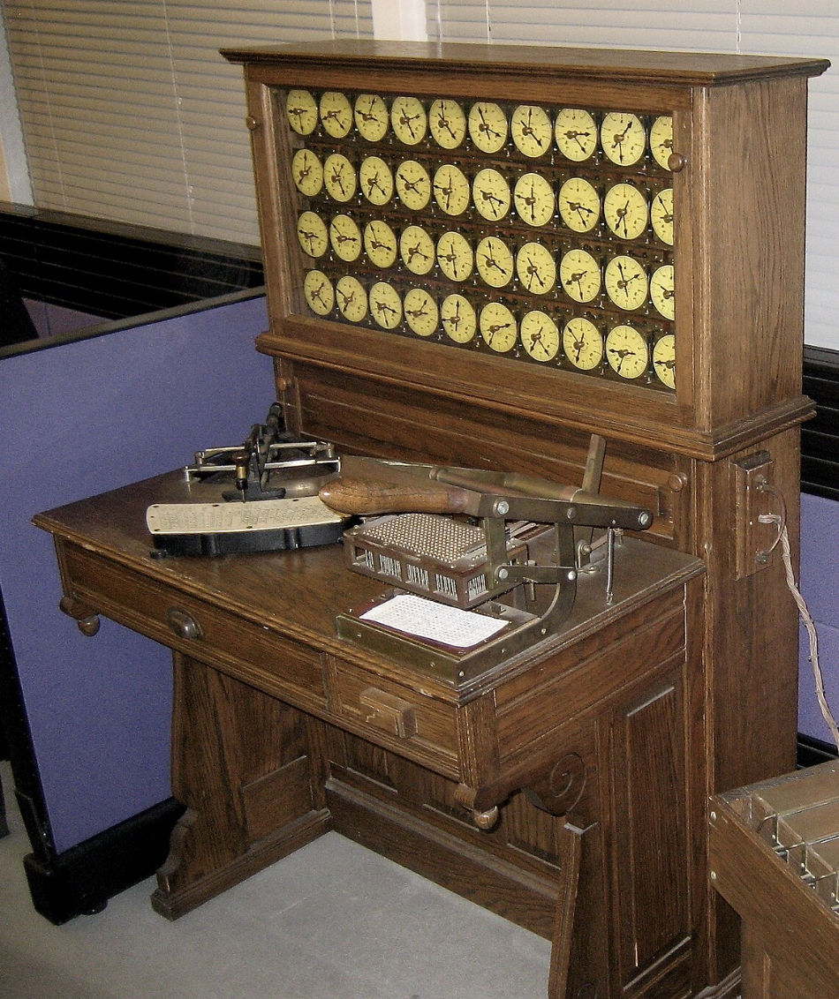
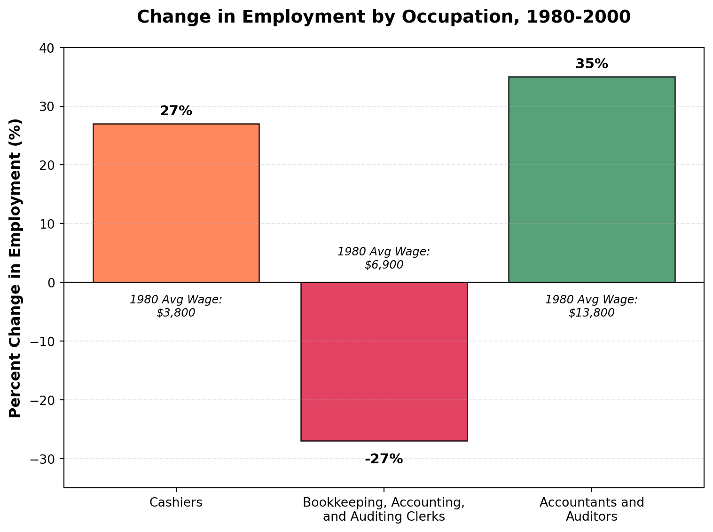
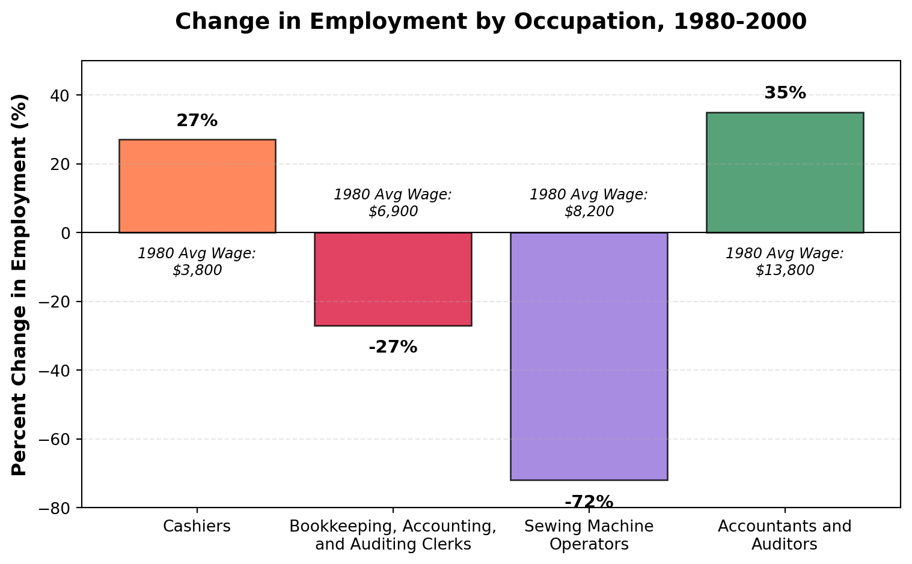
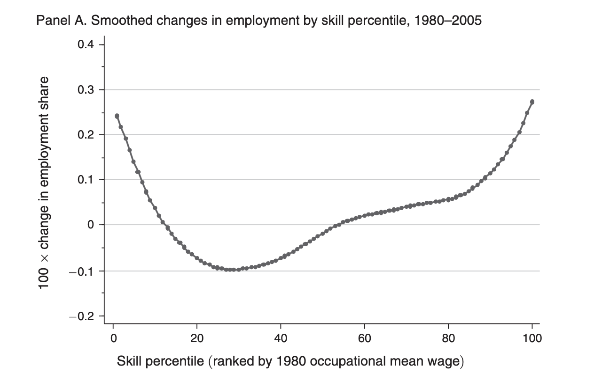
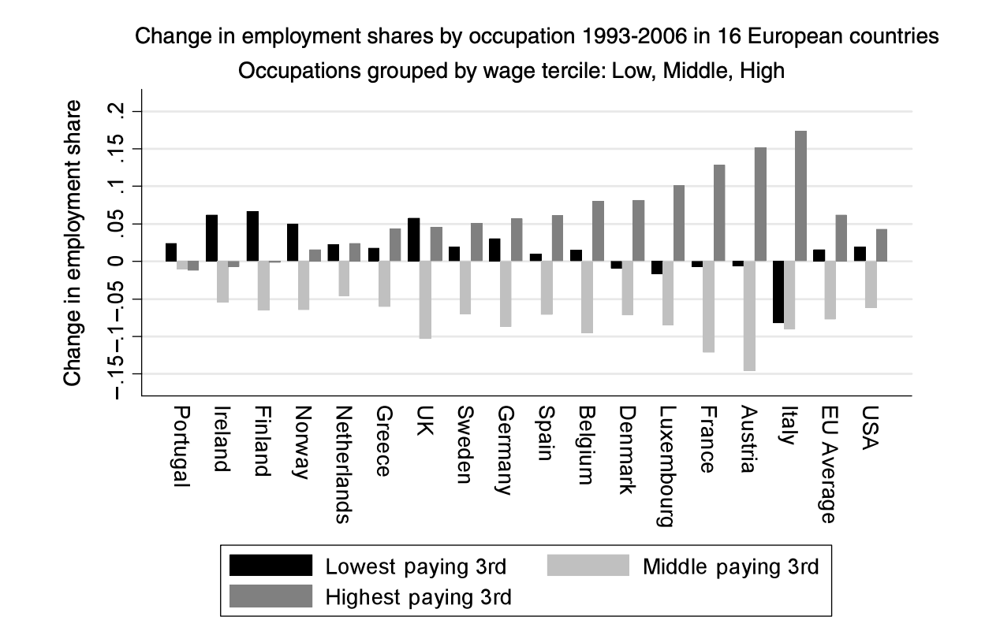
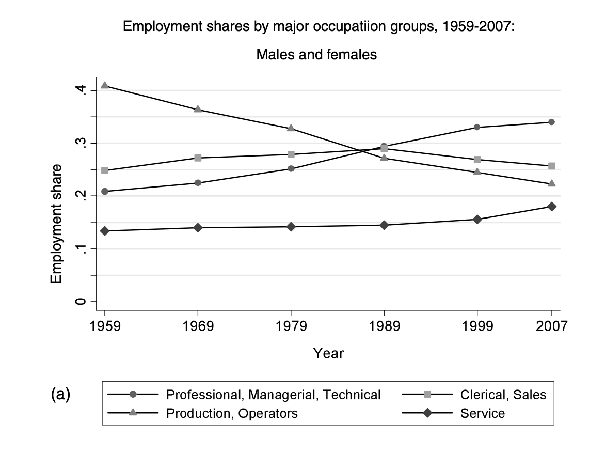

7 Technology: A Task Approach
7.1 The Luddites
In the early 19th century, the textile industry was one of the most important industries in England. One in four workers were employed in the industry, making it a key source of employment. But the early 19th century was also a time of dramatic technological change. Driven by the industrial revolution, owners of factories were continually introducing more and more machinery. Not everyone was excited about this. Textile workers were worried the new mechanized weavers would replace them in the long run. According to legend, one weaver in Leicester grew so enraged by a new mechanical loom that he smashed it in a fit of fury. His name, reportedly, was Ned Ludd.
Whether or not Ned Ludd actually existed, his story spread across England and he became a folk hero to workers anxious about the advance of machinery. A political movement emerged with Ludd as its symbolic figurehead. The so-called “Luddites” organized nighttime raids on factories and destroyed the machines they saw as threats to their livelihoods. In one dramatic incident at Rawfolds Mill, a group of 100 armed Luddites clashed with local soldiers. The violence triggered a harsh government crackdown and eventually brought the movement to an end.
Today, the term luddite is often used pejoratively to describe someone opposed to new technology. Economists have typically argued that even labor-displacing innovations benefit society in the long run. In the case of the Industrial Revolution, the initial disruption to jobs eventually gave way to widespread economic growth and rising living standards. If you had told a textile worker in 1800 that by the year 2000, employment in English textile mills would be virtually nonexistent, they might have assumed disaster had struck. But instead, employment shifted to other sectors, often ones with higher wages and better working conditions.
This will be the first in two chapters on how technology has shaped the labor market over time. As we have seen with the luddites debates on the impact of technology on labor markets has been around for a long time. There are still two basic views on technology. First, there is a view you may often hear in Silicon Valley, the view that new technology leads to new prosperity, automatically. This certainly has some appeal when looking at the long sweep of history. Real incomes have risen dramatically over time and we owe a lot of this to new technology. But even if technology does lead to growth in aggregate, there is nothing that implies that these gains will be shared equally. This will be the topic of this chapter. How has technology impacted inequality in the 20th century.
7.2 A Brief History of Computing
There are many places that one could start when talking about the impact of technology on labor markets. The industrial revolution is an obvious place since it fundamentally changed the occupational structure of economies, shifting individuals from farms into cities and factories. There are a large range of inventions during this time that had enormous impact on workers, including the steam engine, the expansion of railways, automatic sewing machines, new industrial processes, among others. There are volumes of books on these topics and their impact on not only workers, but history more generally.
Electrification is another potential place to begin. The National Academy of Engineering calls electrificaton “the greatest engineering achievement of the 20th century”. Electrification brough tremendous changes to the economy, leading to further innovations and growth which impacted all facets of life, includng the labor market.

Modern labor economics, however, has had much more focus on more recent technological advancements. And one has garnered more attention than others because of its now ubiquitous use in nearly all industries: the computer. A computer is at its core an information processing system. One of the simplest historical information processing systems is the abacus. Throughout human civilization, a constant need for societies everywhere was to collect taxes. Collecting taxes often involves adding large sums together to figure out the total tax owed or the total taxed paid in a given jurisdiction. The abacus was a tool that has been around for millenia that has aided workers in keeping track of large sums. It is, at its core, an information processing system. The data inputs are often beads on a series of rods, which can be moved to represent numbers. By manipulating the beads according to simple rules, users could quickly perform addition, subtraction, multiplication, and division. Many of these tools were used in a time before the zero was invented, making these even more difficult!
There were a number of conceptual breakthroughs that occurred between the ancient times of using abacuses and the modern computer. First, Charles Babbage invented the idea of a programmable computer. Calculators and abacus prior to this time were hardwired to do certain operations. They could do basically one task and they performed that task no matter what the inputs where. A programmable computer is different. It can do several tasks, you just need to give it information on what it should do. This is the birth of programming (a set of instructions for a computer to follow so that it accomplishes a given task). Ada Lovelace ( daughter of notable English poet Lord Byron) was the first to identify that Babbage’s computer had applications beyond calculating numbers. For her insights into the use of Babbage’s machine she is often credited as the first programmer.
Babbage’s idea was revolutionary, but the true power of computation was not realized until the conceptual work of Alan Turing. It seemed intuitive at the time that very different tasks would need entirely different machines. To take two examples from this era, let’s consider the calculator and a tabulating machine. Mechanical calculators are much like calculators we have today. The exact mathematical operation could depend on the settings (i.e. be programmable like Babbage envisioned), but its scope was limited to certain mathematical operations: often addition, subtraction, multiplaction, and division.

The tabulating machine was invented by Herman Hollerith in order to aid the U.S. Census in its data-gathering mission. The way it worked is that Census workers encoded individuals responses on punch cards. The tabulating machine would read the holes in the cards and count or sort the data. This would allow the Census to quickly count up the number of individuals, and because the cards were also sorted, one could count the number of females, number of individuals of different ages, etc.
But try to put yourself into the shoes of people at the time. Does it seem intuitive that you could build a single machine that both does mathematical calculations and counts and sorts data? A machine where you could input the data and then perform complex mathematical operations. The two machines don’t appear to have much in common. Maybe you think it seems possible to somehow combine the two in some way, but what if you also want to write text on the machine. That seems like it would take even more hardware to add to the machine.
Alan Turing’s insight was the idea of a universal machine. He showed that you can construct a machine that can simulate the behavior of any other machine. This is referred to now as a universal Turing machine. The machine just requires the correct instructions. The insight was purely theoretical. But it set the stage for the foundation of general-use computers. A key idea here is the difference between hardware and software. The hardware is the universal machine, the software tells the universal machine what to do. With one set of software it is a calculator. With another it is a tabulating machine. Today, our personal computers, phones, tables, these are universal turing machines.
Since Turing’s insight, there have been many more revolutionary insights into computing, including the design of the architecture of the first modern computer by John von Neuman, it’s practical implementation in the invention of the EINAC, the invention of programming languages, microprocessors, and finally, the personal computer, the focus of our next section.
7.3 The Computer
The widespread use of personal computers began in the U.S. in the 1980s. Now, try to imagine you are an accountant before the rise of personal-use computers. Let’s say you have a relatively straightforward task for the day. You need to calculate the payroll for all the employees. This would involve adding up the hours for each employee, multiplying by the wage and then adding it to the payroll ledger. It’s a simple task, but could take an extremely long time depending on the number of workers in the firm. And you might make some errors. Those errors might be costly to correct if the paychecks go out with the wrong information.
Now imagine your firm purchases the new Apple computers which come with a spreadsheet. You’ve got a column for wages and a column for hours. Computing payroll adds up to a few keystrokes on the computer. If you’re the accountant you might have two very different reactions. You might be relieved. What used to be an extremely tedious error-prone process has become simple. You can focus your effort on less tedious, more conceptually difficult tasks. Your productivity is going to skyrocket.
But you might have an entirely different reaction. You might be extremely worried. Do they need all these accountants now that computers can do these operations so quickly and with fewer errors. This isn’t a productivity boost, it’s a replacement. In 1980, it was not at all obvious which of these two scenarios would play out. But to fully understand the picture of how the wage structure evolved, we have to add another type of worker to our example: the support staff.
7.4 Routine vs. Non-Routine Tasks
To understand the impact of computers on the labor market, we are going to use a framework that is referred to as a “task model”, which was first proposed in 2003 in an article by David Autor, Frank Levy, and Richard J. Murname. Before the task model, economists typically thought of workers as being high-skilled or low-skilled, high-productivity or low-productivity. High-skill workers were able to produce more output than low-skilled workers. But this framework had many shortcomings. In reality, workers are not directly producing output. If you think of basically any firm there are a wide range of tasks that must be accomplished in order to produce some output. For example, to produce a phone, you need a team of engineers to design the phone. You need a team to source the inputs for the phone. You need a team and machinery to assemble the parts into a phone. Finally, you need a team to market and distribute the phone. You can think of each of these steps as a task that must be accomplished. These tasks can be performed by different types of workers or they can be performed by machines. In this section, we will think about what types of tasks the computers can perform, and how this will impact different types of workers.
Until recently, there was basically a single dominant paradigm for how to get a computer to do something. You needed to write a computer program that told the computer exactly what to do. You specify each step carefully in code. We are going to refer to tasks that can be accomplished by following a set of rules as routine tasks. Routine tasks can further be broken down into two types: cognitive and manual. Examples of cognitive routine tasks include record keeping, performing calculations, and simple customer service interactions, like taking money out of an ATM. Examples of manual routine tasks include things like sorting items or assembling items on a production line.
In contrast to routine tasks, we have non-routine tasks. Non-routine tasks are tasks that would be very difficult by following a set of rules, often because the task may vary greatly depending on the setting. For example, take a truck driver. While most people can drive a truck relatively easily, imagine trying to write a set of rules for a machine to follow. You would need to figure out all the potential situations the truck would find itself in and come up with a solution for each individual one. While humans can react quickly and figure out a solution, it would be difficult to codify this in a set of rules. Non-routine tasks can also be broken down into two types: cognitive and manual. Examples of non-routine cognitive tasks include things like medical diagnoses, legal writing, managing a team. Examples of non-routine manual tasks include things like cleaning a house, driving a truck, or cooking a meal.
Until very recently, computers were not very good at performing non-routine tasks. The machine-learning breakthrough has changed this. To understand why, let’s consider a very simple example. Imagine we are watching someone throw a baseball and we want to predict where the ball will land. This is relatively easy to figure out by writing a traditional computer program. The code would be Newton’s laws of motion. You can write a program that takes the initial position, velocity, and angle of the throw and then uses these rules to predict where the ball will land. We know the rules of motion, so we can write a program that will work very well. This will be a simple program.
Now, imagine we didn’t know Newton’s laws of motion. Instead, we had a large dataset of baseball throws. A machine-learning approach would use this data to figure out how baseballs generally behave. The machine-learning algorithm would look for patterns in the data and use these patterns to make predictions. This is a very different approach than writing a traditional program. We don’t need to understand the laws of physics, we just need a lot of data.
The machine-learning approach is very powerful because it can be used in situations where we don’t know the underlying rules. For example, let’s take the self-driving car example. It would be extremely difficult to write a traditional program that could handle all the potential situations a car might find itself in. But with enough data, a machine-learning algorithm can learn to recognize patterns and make decisions based on those patterns. Writing human language turns out to be similar. You could hypothetically write a chatbot that follows a set of rules to respond to questions. But then you would need to come up with rules for every possible question. Machine-learning approaches have proven to be much more tractable in this setting.
While conceptually machine learning has been around since the middle of the 20th century, it had very limited impact until recently. Therefore, for this section in which we seek to understand changes in the labor market from 1980 to 2010, we will focus on the traditional computer programming approach. For traditional computers, they are very good at performing routine tasks, both cognitive and manual. They are not very good at performing non-routine tasks, either cognitive or manual. In a later chapter, we will return to the machine-learning revolution and how it has changed the landscape of what computers can do.
7.5 The Demand for Tasks
To understand how computers will impact the labor market, let’s return to our example of the accountant. For an accountant, the work is entirely cognitive. Some of the tasks are likely routine, like calculating payroll. Other tasks are likely non-routine, like researching tax codes, advising management and organizing clerical staff. One source of information on what occupations do is the Dictionary of Occupational Titles (DOT). The DOT was a massive effort by the U.S. Department of Labor to classify occupations and describe what tasks are performed in each occupation. The DOT was first published in 1939 and was updated several times until it was replaced by the O*NET database in the 1990s. Let’s look at the DOT description for accountants in the 1965 version, before the introduction of computers into the workplace.
Work activities in this group primarily involve the application of the principles of accounting, cost analysis, and statistical analysis to problems of fiscal management, auditing, and the like. Typically, workers are engaged in devising accounting systems and procedures; appraising assets and evaluating costing methods, investment programs, and monetary risks and rates; and preparing statistical tabulations and diagrams and financial reports, statements, and schedules for use by management.
— Dictionary of Occupational Titles, 1965
Now let’s think about how the introduction of computers will impact the demand for accountants. To be very concrete, let’s pick out one task mentioned in this prior description: “preparing statistical tabulations and diagrams and financial reports, statements, and schedules for use by management.”
Performing this task is actually a mix of routine and non-routine tasks. First, someone needs to actually collect the data. This is often not done by the accountant themselves, but rather by support staff. Once the data is collected, the accountant needs to perform the statistical tabulation. But the accountant needs to further decide how to interpret and present the results. This last part is highly non-routine. It could require judgment, creativity, and an understanding of the audience.
Now, what does a computer do well? It can perform the statistical tabulation very quickly and accurately. This means that the demand for accountants to perform this routine task will fall. But the non-routine part of the task, interpreting and presenting the results, is not something a computer can do well (at least until very recently).
In this example, there are two forces at work. First, some of the tasks the accountant performs are routine and can be automated by computers. This will reduce the demand for accountants to perform these tasks. However, the accountant has become much more productive. The accountant can now focus on the non-routine tasks that require judgment and creativity, and not on spending hours and hours tracking down small calculation errors. If this increase in productivity is large enough, it could actually lead to an increase in the demand for accountants overall. If you are a firm deciding whether to hire an accountant, you might be willing to pay more for an accountant who can use computers to quickly prepare financial reports. Maybe the computer has made the accountant so productive that you want to hire accountants not just for payroll, but also to help with budgeting, forecasting, tax planning, etc.
But what about the support staff of the accountant? The support staff may have been performing routine tasks, like data entry. Before computers, keeping track of data was a huge task. But with spreadsheets and databases, much of this work can be automated. You may need someone to enter the data initially, but keeping track of it and updating it is much easier. Therefore, the demand for support staff may fall.
At the end of the day, what happened is an empirical question. We can probably come up with alternative stories that make sense, so let’s see what actually happened in the data. To do so, we are going to take advantage of the fact that the US Census has been collecting data on the occupations of workers for a long time. In particular, we are going to look at the 1980 Census, which was the last Census before computers were widely used in the workplace, and compare it to the 2000 Census. We will compare accountants and auditors. These workers tend to be highly educated and as described above, perform a number of non-routine cognitive tasks. We will compare them to bookkeeping, accounting, and auditing clerks. These workers tend to perform more routine cognitive tasks.
The figure below shows the change in employment and wages for these two occupations between 1980 and 2000, the period in which computers were introduced into the workforce. To compute these changes, I utilized the IPUMS USA database, which provides microdata for a 5% sample of the US Census. I identified individuals in the 1980 and 2000 Censuses who reported their occupation as either “Accountants and Auditors” or “Bookkeeping, Accounting, and Auditing Clerks”.
To compute changes in employment, I calculated the fraction of the total workforce in each year that reported being in each occupation. I then computed the percentage change in this fraction between 1980 and 2000. The figure below shows the results.
These are some pretty striking results. The employment of accountants and auditors increased by 35% between 1980 and 2000. In contrast, the employment of bookkeeping, accounting, and auditing clerks decreased by 27%. This is consistent with our theory that computers have increased the productivity of accountants, leading to higher demand for their services, while reducing the demand for routine clerical tasks which accountants use as inputs and can often be performed by computers. To be clear, it is not as if the raw number of accountants is much larger than the number of clerks. In 2000, there are still many clerks. About 0.8 percent of all workers are in these bookkeeping, accounting, and auditing clerk roles. This is actually similar to the total number of accountants and auditors.
The key here is the growth rates vary wildly. In 1980, about 0.5 percent of all workers were accountants and auditors. By 2000, this had grown to about 0.67 percent. In contrast, bookkeeping, accounting, and auditing clerks made up about 1.0 percent of all workers in 1980, but this had fallen to about 0.8 percent by 2000.
7.6 Job Polarization
The relative decline in the demand for clerks is notable. One natural question is where might these workers go? One possibility is that they move to occupations that are not as exposed to automation by computers. For example, cashiers are likely not as exposed to automation. While it was easier to monitor revenue and sales with computers, the actual task of checking out customers was not easily automated. In the figure below, we show the change in employment for cashiers between 1980 and 2000, plotted alongside the changes for accountants and clerks.

As can be seen in the figure, cashiers saw a 27% increase in employment between 1980 and 2000, similar to our increase for accountants. As you may have noticed in the figure, we also ordered these occupations by their average wage level in 1980. Cashiers were the lowest paid of the three, clerks were in the middle, and accountants were the highest paid. Therefore, from 1980 to 2000, we see growth in employment at both the low-wage end (cashiers) and the high-wage end (accountants), while we see a decline in employment in the middle (clerks). This pattern is referred to as job polarization. Technology has displaced middle-skill workers.
So far we have three occupations: accountants, clerks, and cashiers. Let’s map these back to our task framework. Accountants generally perform non-routine cognitive tasks. Clerks generally perform routine cognitive tasks. Cashiers generally perform non-routine manual tasks. This begs the question: what about routine manual tasks? Are there occupations that perform routine manual tasks that have also seen declines in employment? Let’s assume the accountant is an accountant for a firm that produces clothes, and as part of the production process they have workers who operate sewing machines. This is a routine manual task (replacing sewers with machines is a long tradition, with the original luddite movement being a reaction to the mechanized looms). The figure below shows the change in employment for sewing machine operators between 1980 and 2000, alongside our other three occupations.

So in this figure, we see that sewing machine operators saw an enormous 72% decline in employment between 1980 and 2000. This is consistent with our theory that routine tasks are being displaced during this period. To summarize, we considered four occupations: - Accountants and Auditors: non-routine cognitive tasks, saw a 35% increase in employment - Bookkeeping, Accounting, and Auditing Clerks: routine cognitive tasks, saw a 27% decrease in employment - Cashiers: non-routine manual tasks, saw a 27% increase in employment - Sewing Machine Operators: routine manual tasks, saw a 72% decrease in employment
Because the routine tasks (both cognitive and manual) had wages in the middle of the wage distribution (relative to accountants and cashiers), we see a pattern of job polarization: growth in low-wage and high-wage occupations, and decline in middle-wage occupations.
Now, we’ve done this for a few set of occupations. This is useful as it gives us a concrete way to tell a story about how technology may or may not impact these occupations, but we should be careful not to extrapolate too much from a few examples. Our goal next is to understand whether this pattern of job polarization is a general phenomenon or just holds for these few occupations we happened to pick.
One way to do this is to look across all occupations and rank them in terms of their average wage in 1980. Then, we can compute the change in employment for each occupation between 1980 and 2000. If job polarization is a general phenomenon, we should see that occupations at the low end and high end of the wage distribution saw increases in employment, while those in the middle saw decreases. The figure below (Autor and Dorn (2013)) shows this relationship. The horizontal axis is the rank of the occupation in terms of its average wage in 1980. The vertical axis is the change in employment between 1980 and 2000. So to be concrete, the average wage for accountants in 1980 put them at just above the 70th percentile of this distribution. So 70 percent of occupations had lower average wages than accountants. Accounting clerks were around the 23rd percentile, while cashiers were around the 6th percentile. The figure shows a smoothed version of the relationship between employment changes and the average wage of the occupation. Smoothed in this context means that we are not plotting the raw data for every single occupation, instead we are plotting a smoothed curve that captures the general trend.

As we can see in the figure, occupations at the low end of the wage distribution (left side of the figure) saw large increases in employment. Many of these low-wage occupations are in the service sector, things like food preparation, cleaning, and waiting tables. Occupations at the high end of the wage distribution (right side of the figure) also saw increases in employment. Many of these high-wage occupations are in professional and technical fields, like management, law, and medicine. In contrast, occupations in the middle of the wage distribution saw decreases in employment. Many of these middle-wage occupations are in clerical and administrative support roles.
One remarkable aspect of this story is that it is not at all specific to the United States. For example, Acemoglu and Autor (2011) present results for a number of countries. To make things easy-to-visualize, they break occupations into three groups: low-wage (bottom third of the distribution), middle-wage (between 33rd percentile and 66th percentile), and high-wage (top third of the distribution). They then plot the change in employment for each group over time. The figure below shows the results for a number of countries.

If we zoom in on the right-most part of the figure, we see the USA, where we know lowest paying jobs and highest paying jobs have grown, while middle-paying jobs have shrunk. But we see this same pattern across many countries. The most stark pattern is the persistent increase in growth of high-wage jobs in many countries, and the persistent decline in middle-wage jobs. The low-wage jobs have more mixed results, but many countries show increases in low-wage jobs as well. Overall for the EU, the pattern is remarkably similar to the US.
7.7 Job Polarization and Tasks
Let’s revisit our original argument: computers are good at performing routine tasks. For our accountant, clerk and cashier example, we argued that the accountants specialize in non-routine cognitive tasks, clerks specialize in routine cognitive tasks like tracking data, and cashiers specialize in non-routine manual tasks. Now, to show that job polarization is really driven by technology, it would be helpful if we could show that the occupations that are declining in employment are the ones that specialize in routine tasks.
There are a couple of different ways to do this. One way is to use the Dictionary of Occupational Titles (DOT) to classify occupations by the types of tasks they perform. The DOT has a number of variables that describe the tasks performed in each occupation. This is the approach taken by Autor, Levy, and Murnane (2003), which first introduced the task framework.
Another option is to use the ONET database, which replaced the DOT in the 1990s. The ONET database has a number of variables that describe the tasks performed in each occupation. One advantage of the O*NET database is that it is more detailed than the DOT. It has over 200 variables that describe the tasks performed in each occupation.
However, arguably the simplest is to just use broad categories that seem plausible. Acemoglu and Autor (2011) use a simple classification of occupations into four categories: routine cognitive, routine manual, non-routine cognitive, and non-routine manual. They argue that professional, managerial, and technical occupations are non-routine cognitive. This group contains many detailed occupations, specific types of engineers, lawyers, doctors, managers, etc.
The second group is clerical, sales and administrative support occupations. These occupations specialize in routine cognitive tasks. This group contains occupations like secretaries, bookkeepers, and data entry clerks. The third group is service occupations. These occupations specialize in non-routine manual tasks. This group contains occupations like food service workers, janitors, and personal care aides. Lastly, the fourth group is production, craft, repair and operative occupations. These occupations specialize in routine manual tasks. This group contains occupations like assemblers, machine operators, and construction workers.
The table below summarizes this classification as well as the prediction of how employment should change in each group if computers are driving changes in employment shares. If computers can replace routine tasks, then we should see (relative) employment declines in the routine cognitive and routine manual groups. In contrast, we should see (relative) employment increases in the non-routine cognitive and non-routine manual groups.
| Group Label | Example Occupations | Routine/Non-Routine | Cognitive/Manual | Predicted Change |
|---|---|---|---|---|
| Professional, Managerial, and Technical | Managers, Engineers, Lawyers, Doctors | Non-Routine | Cognitive | ↑ Increase |
| Clerical, Sales and Administrative Support | Bookkeepers, Secretaries, Data Entry | Routine | Cognitive | ↓ Decrease |
| Service Occupations | Food Service, Janitors, Personal Care | Non-Routine | Manual | ↑ Increase |
| Production, Craft, Repair and Operative | Assemblers, Machine Operators, Laborers | Routine | Manual | ↓ Decrease |
So let’s see what this looks like in the data. The figure below (Acemoglu and Autor (2011)) shows the change in employment shares for each of these four groups between 1959 and 2007. The vertical axis is the change in employment share, which is the fraction of all workers in that group.

Let’s first look at the production and operators group, which tend to perform routine manual tasks. This group has seen an incredibly large decline in employment share, falling from about 40 percent of all workers in 1959 to just over 20 percent in 2007. Clerical and sales support occupations, which are also exposed to automation, saw a rise in the earlier part of the period, but declined throughout the 1990s and 2000s.
In contrast, non-routine cognitive occupations have seen a steady increase in employment share, rising from about 20 percent of all workers in 1959 to about 35 percent in 2007. Non-routine manual occupations have also seen an increase, though it is more modest, rising from about 14 percent in 1959 to about 18 percent in 2007.